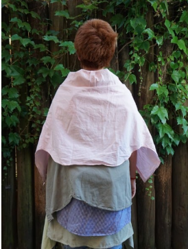
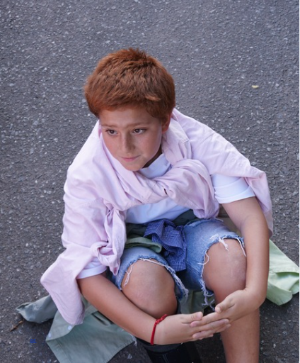
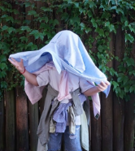

El proyecto se enmarca en la investigación sobre el segmento preadolescente, con el objetivo de identificar tres microtendencias estéticas que configuran posibles escenarios de consumo futuro. A partir de la observación de cambios en sus modos de habitar, expresarse y vincularse con el consumo (respaldados también por distintos artículos y notas periodísticas) se detecta una macrotendencia denominada Lost Ground. Esta define un estado generacional caracterizado por la pérdida de un suelo simbólico desde el cual organizar la experiencia. Lost Ground refiere a que la infancia deja de funcionar como refugio y la adultez aún no se vuelve alcanzable. En este escenario, el preadolescente aprende a habitar la transición, a sostenerse en el movimiento y a construir sentido en condiciones de inestabilidad. Como respuesta a este contexto, emergen tres estrategias de adaptación que se manifiestan en formas estéticas, comportamientos y lenguajes visuales específicos. Estas son abordadas a través de tres microtendencias propias, que permiten analizar distintas maneras de procesar y operar sobre este presente: Urban Overload, The Hidden Self y Playful Shelter.
Urban Overload aborda la sobreestimulación como condición cotidiana en el entorno preadolescente. En un contexto saturado de estímulos, información y estímulos urbanos, el sujeto desarrolla una forma de habitar basada en la acumulación, la simultaneidad y la intensidad. Lejos de buscar orden, incorpora el exceso como lenguaje, construyendo identidad a partir de lo múltiple, lo caótico y lo inmediato. Esta microtendencia refleja una estrategia de adaptación donde el desborde no se evita, sino que se asume y se procesa como forma de estar en el mundo.


The Hidden Self aborda la necesidad de intimidad y refugio en el contexto preadolescente. Frente a la exposición constante y la sobreestimulación del entorno, emerge una estrategia de construcción de identidad basada en la reserva, el secreto y la creación de espacios privados. Esta microtendencia refleja una forma de habitar donde el sujeto busca resguardar su mundo interior, diferenciarse a través de lo no dicho y construir sentido en la intimidad. Es una respuesta a la necesidad de tener un lugar propio, un territorio personal que funcione como refugio frente a la presión del afuera.



Playful Shelter aborda la necesidad de refugio y juego en el contexto preadolescente. Frente a la sobreestimulación y la pérdida de referentes, emerge una estrategia de construcción de identidad basada en la creación de espacios propios, la experimentación lúdica y la búsqueda de entornos seguros. Esta microtendencia refleja una forma de habitar donde el sujeto transforma su entorno a través del juego, construye sentido en la exploración y encuentra refugio en la creación. Es una respuesta a la necesidad de tener un lugar propio, un territorio personal que funcione como base para explorar el mundo.